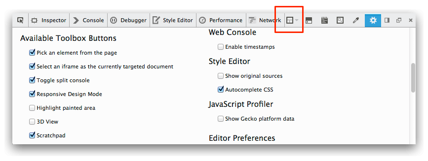
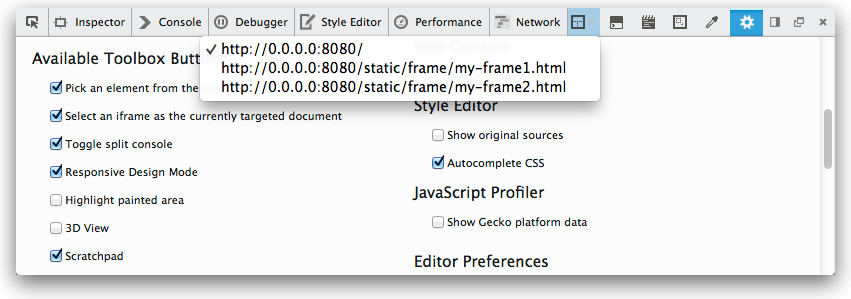

You can point the developer tools at a specific iframe within a document.
{{EmbedYouTube("Me9hjqd74m8")}}
You'll see a button in the toolbar:
Click it, and you'll see a popup listing all the iframes in the document, as well as the main document itself.

If you select an entry in the list, all the tools in the toolbox - the Inspector, the Console, the Debugger and so on - will now target only that iframe, and will essentially behave as if the rest of the page does not exist.